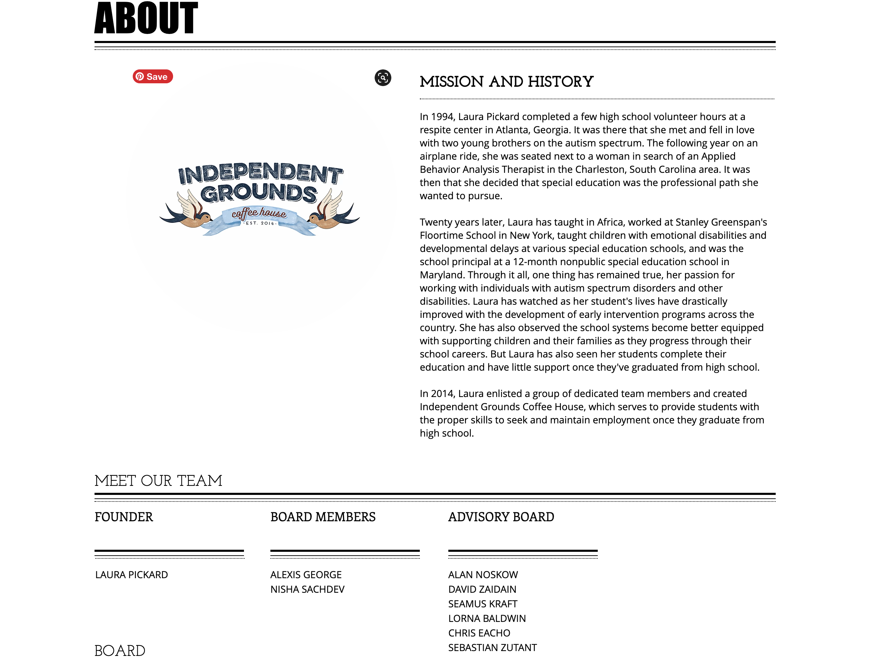
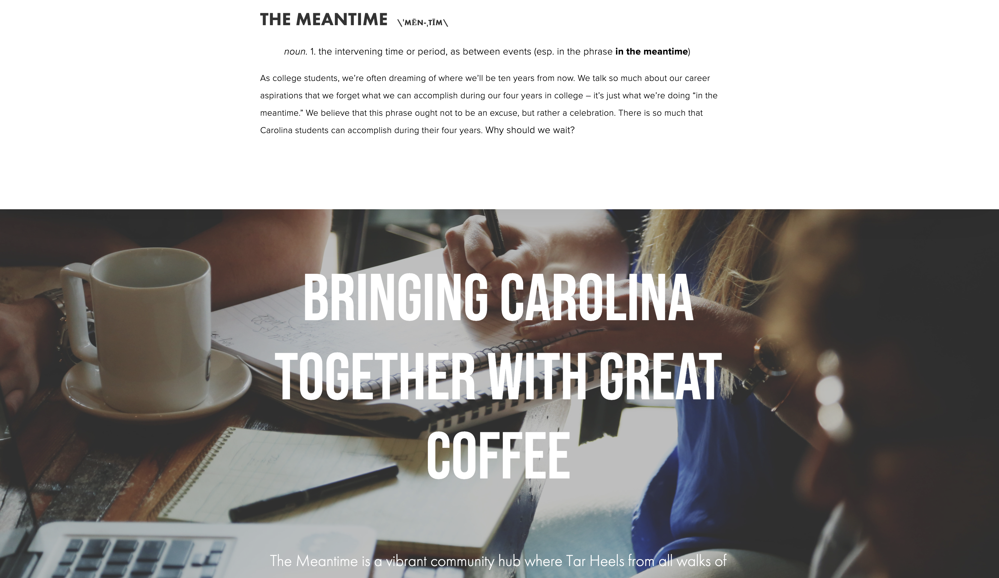
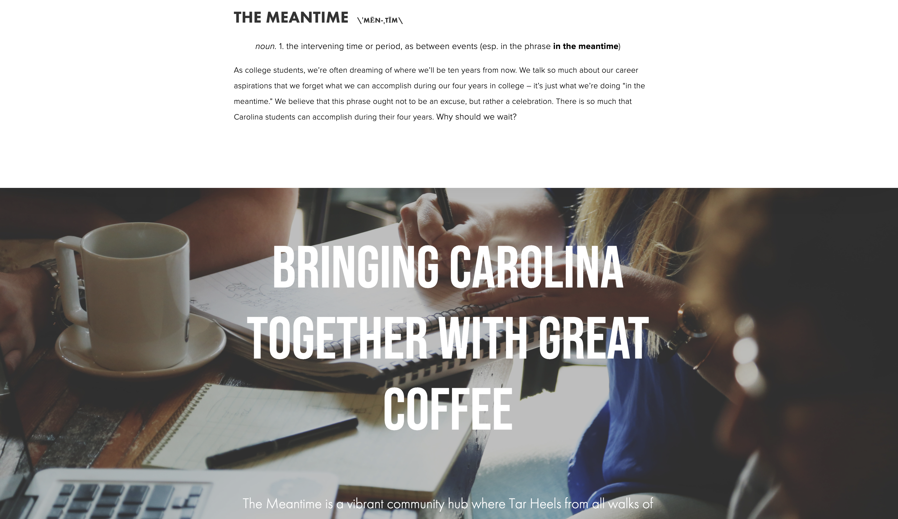

Research
Primary and Secondary Client Research
Primary Research
In this first research phase, research about the company and their mission was completed. The following images display the organization's current strategies for advertising and communication through their website.
Independent Ground Coffee House's current Logo:
Independent Ground Coffee House's current "home" page:

Independent Ground Coffee House's current "about us" page:
Independent Ground Coffee House's current "what we do" page:
Independent Ground Coffee House's current "support us" page:
Independent Ground Coffee House's current "shop" page:
Independent Ground Coffee House's current Instagram page:
Secondary Research
In this second research pahse, reserach about the challenge that the organization works to overcome was completed. Articles and innovations that directly relate to this challenge provided further information on the issue at hand. This allowed for a better understanding of the topic of the challenge, and thus, a better idea of how to help the organization solve this issue through their website.
The secondary research provides information on the following: exploring the most recent news in the client's field, recent innovations in the client's particular area, other solutions in the area, particlarly in the website design, and breif market data that is relevant in helping solve the design challenge.
Below is secondary research concerning special needs and developmental delays, as well as current innovations and treatment plans:
Below is continued secondary research, focused sepcifically on websites that I think will be strong design references when working to solve the design issue at hand:
Website Reference Example 1: Meantime Coffee Company website
This company is also a nonprofit organization who sells coffee as a means of drawing people in. The simplicity, clarity, and easy-to-use design features that this website contains will help me in redesigning the website for Independent Grounds Coffee House website.
 


Website Reference Example 2: Greater Goods Coffee Company
This company is also a nonprofit organization who sells coffee as a means of drawing people in. The simplicity, clarity, unified style, heirarchy, and easy-to-use design features that this website contains will help me in redesigning the website for Independent Grounds Coffee House website.
About Coffee: the source of income of Independent Grounds Coffee
Coffee is one of the most widely consumed beverages worldwide and in the United States. Millions of consumers across the country cannot imagine starting their day without a hot cup of coffee. Coffee is produced from the Coffea plant, which naturally contains caffeine with levels varying between individual plants. There are over 120 species of the plant.
The U.S. has, by far, the largest coffee market worldwide, with revenues reaching over 80 billion U.S. dollars. Brazil follows in distant second place, followed by Japan and Canada. When it comes to trade, the two leading coffee exporters to the United States are Colombia and Brazil. Both countries exported over one billion dollars of coffee to the U.S. in the most recent year.
American coffee consumption has slightly fluctuated in recent years yet has remained around two cups per day per capita. The top location for coffee consumption among Americans is at home, followed by the office.
Because of these facts, Independent Grounds' choice of using coffee as the means of drawing people in to help their cause was clearly an intetnional and successful. Seen below is research about the specific coffee brand that Independent Grounds sells to their customers.